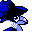

#163
Honchkrow
Dark
It leads smaller MURKROW and builds nests with loot Its cry warns its followers
Base stats Total 445
HP100
Attack125
Defense60
Speed71
Special89
Details
- Species
- Big Boss
- Height
- 2'11"
- Weight
- 60.3 lb
- Catch rate
- 30
- Base exp
- 177
- Growth
- Medium Slow
Level-up moves
LevelMoveType
StartPeck
StartQuick AttackNormal
Lv 12Peck
Lv 25BiteDark
Lv 36CrunchDark
Lv 38Sucker PunchDark
Lv 40Drill Peck
Lv 44Night ShadeGhost
Lv 48Sky Attack
Evolution
Evolves from Murkrow
Where to find
Not found in the wild — evolve, trade or catch it elsewhere.
TM / HM
TM02 Razor WindTM06 ToxicTM07 Shadow BallTM09 Take DownTM10 Double-EdgeTM15 Hyper BeamTM29 PsychicTM32 Double TeamTM39 SwiftTM42 Dream EaterTM43 Sky AttackTM44 RestTM45 Thunder WaveTM50 SubstituteHM02 Fly